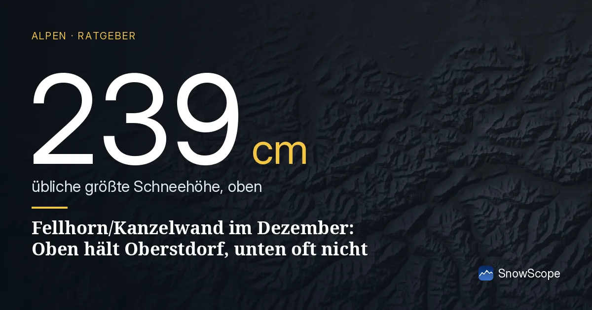

Fellhorn/Kanzelwand im Dezember: Oben hält Oberstdorf, unten oft nicht
Die Schneehöhe auf Fellhorn/Kanzelwand im Dezember hängt ganz davon ab, wo du fährst. Der obere Berg bleibt zuverlässig, das Tal dagegen dünn – das zwingt dich zur Wahl: Zahle für die Talfahrt mit der Bahn, oder buche später im Winter, wenn die Basis nachkommt.
Die Live-Schneeprognose für Fellhorn/Kanzelwand in der SnowScope-AppSchneehöhen, Pulverschnee-Alarme und 3D-Karte, gratis.
Oberer Berg: Hier lebt der Dezemberschnee
Der Gipfel auf 1965 m liegt in einem anderen Winter als das Dorf. An einem typischen 15. Dezember trägt er 63 cm, und in 93 Prozent der letzten 46 Winter lagen hier 30 cm oder mehr sowohl in der Woche 15.–21. Dezember als auch in der Weihnachtswoche. Bis zum 24. Dezember erreicht die typische Tiefe 88 cm.
Diese Zuverlässigkeit macht die oberen Pisten zur sichersten Dezemberwette. Der Grat selbst ist nach Stürmen dem Wind ausgesetzt, also schau vor der Abfahrt in die Lawinenwarnberichte Bayern und Vorarlberg.


Mittlerer Berg: Die Übergangszone
Auf 1441 m schwankt der mittlere Berg zwischen zuverlässig und dünn. Ein typischer 15. Dezember hat 30 cm. Die Chancen steigen, je näher Weihnachten rückt: 59 Prozent der Winter erreichten 30 cm in der Woche 15.–21. Dezember, steigen auf 70 Prozent in der Weihnachtswoche.
Hier zählt deine Woche. Buche 15.–21. Dezember und du findest an den meisten Tagen 30 cm; buche 8.–14. Dezember und du spielst Münzwurf. In der Weihnachtswoche dreht sich die Chancenverteilung in deine Richtung.
Das Taltal: Oft zu dünn zum Vertrauen
Auf 918 m ist der Dezember unzuverlässig. Die typische Tiefe am 15. Dezember beträgt nur 10 cm, und in 11 der letzten 46 Winter lag an diesem Datum blanker Boden. Nur 13 Prozent der Winter sahen 30 cm in der Weihnachtswoche. Der typische erste Tag mit 30 cm am Tal ist der 21. Januar.
Diese Zahlen bedeuten: Plane die Talfahrt mit der Bahn, oder spar dir diesen Ort für Januar und Februar, wenn die Basis reift. Der letzte Winter war schlimmer als üblich – nur 2 cm am 15. Dezember und 0 cm am Weihnachtstag.
Der lange Blick: Der Dezember wird dünner
In den letzten 15 Wintern ist der Dezember dünner geworden als in den ersten 15 Jahren der Aufzeichnungen (1980–81 bis 1994–95). Der Gipfel liegt jetzt im Durchschnitt bei 59 cm statt damals 63 cm; der mittlere Berg fiel von 34 cm auf 28 cm. Der Anteil der Winter mit 30 cm am Berg in der Weihnachtswoche sank von 73 Prozent auf 53 Prozent.
Dieser Trend deutet darauf hin, die Weihnachtswoche nur in größeren Höhen zu buchen, oder deinen Dezembertrip früher im Monat zu legen, wenn der Gipfel am frischesten ist.
Preis: Das Advents-Fenster lohnt sich
Die Saison 2026–27 kostet einen Tarif (EUR 72,90 pro Tag) in der Adventszeit bis 20. Dezember, dann beginnt die Hauptsaison. Der 6-Tage-Pass kostet EUR 344,50 in der Adventszeit und EUR 382,80 danach – eine Ersparnis von EUR 38,30, wenn du bis 20. Dezember fertig bist.
Der Pass deckt alle Lifte und Bahnen in Oberstdorf und dem Kleinwalsertal ab, sodass du zwischen den Gebieten wechseln kannst. Eine Woche zwischen 15.–20. Dezember gibt dir den Preisvorteil und bessere Chancen am mittleren Berg.
Oberjoch: Günstiger, aber dünner
Oberjoch bei Bad Hindelang kostet weniger (EUR 55 pro Tag, EUR 278 für 6 Tage), liegt aber tiefer und wird schneller dünn. Sein Gipfel auf 1556 m hat an einem typischen 15. Dezember 30 cm gegen 63 cm hier; am Berg erreichen nur 28 Prozent der Winter 30 cm in der Woche 15.–21. Dezember. Die Öffnung ist für 11. Dezember geplant, witterungsabhängig.
Wenn das Budget Vorrang hat und du bis nach Weihnachten warten kannst, funktioniert Oberjoch. Für Dezemberzuverlässigkeit kauft dir die Extra-Investition auf Fellhorn/Kanzelwand echter Schnee.
Tipps für Skifahrer
- Buche deinen 6-Tage-Pass so, dass er bis 20. Dezember läuft, und zahle den Advents-Tarif (EUR 344,50 statt EUR 382,80 nach dem 20.).
- Rechne damit, an den meisten Dezembertagen mit der Bahn talwärts zu fahren; verlasse dich nicht auf 30 cm am Tal bis Januar.
- Falls Wind den Gipfel sperrt, nutze deinen Regionpass zum Wechsel auf Mittelberg-Terrain oder auf Kleinwalsertal-Lifte in der Nachbarschaft.
- In der Weihnachtswoche bietet der mittlere Berg die beste Balance zwischen Schneemenge und zuverlässigen Bedingungen auf beiden Höhen.
- Nach Neuschnee am freiliegenden Grat schau in die Lawinenwarnberichte Bayern und Vorarlberg, bevor du abseits der Piste fährst.
Zu diesen Zahlen
Die Schneehöhen der Skigebiete sind der meiste Schnee in den oberen Hängen am angegebenen Tag; es sind Schätzungen für eine Fläche, keine Messung an einem Punkt. Prognosen können sich ändern. Lies vor dem Freeriden immer den offiziellen Lawinenlagebericht.
Offizielle Lawinenlageberichte: Lawinenwarndienst Bayern
Diesen Bericht zitieren
Für Forschung, Lehre oder Presse: Zahlen und Grafiken sind unter CC BY 4.0 mit dieser Quellenangabe frei nutzbar.
SnowScope (2026), Fellhorn/Kanzelwand im Dezember: Oben hält Oberstdorf, unten oft nicht, https://snowscope.app/blog/de/2026/11/fellhorn-kanzelwand-december-oberstdorf-ski-budget.html, abgerufen am 2026-11-14
SnowScope (Atlas Labs). (2026, November 14). Fellhorn/Kanzelwand im Dezember: Oben hält Oberstdorf, unten oft nicht. SnowScope snow reports. https://snowscope.app/blog/de/2026/11/fellhorn-kanzelwand-december-oberstdorf-ski-budget.html
BibTeX
@misc{snowscope2026fellhornkanzelwanddecemb,
author = {{SnowScope (Atlas Labs)}},
title = {Fellhorn/Kanzelwand im Dezember: Oben hält Oberstdorf, unten oft nicht},
year = {2026},
month = nov,
howpublished = {\url{https://snowscope.app/blog/de/2026/11/fellhorn-kanzelwand-december-oberstdorf-ski-budget.html}},
note = {Published 2026-11-14 16:14 UTC; accessed 2026-11-14}
}· CC BY 4.0 · Methoden, Daten und Werkzeuge →
Fellhorn/Kanzelwand: Schnee und Temperatur nach Höhe, dieser Winter vs letzter (Werkzeuge) →
Fellhorn/Kanzelwand folgen
Gratis: eine Nachricht, wenn Neuschnee kommt, und jeden Morgen die Vorhersage.